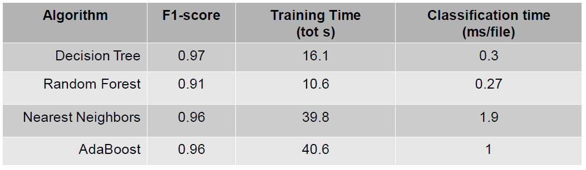
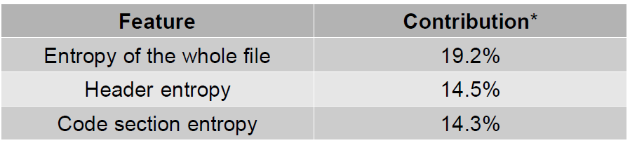
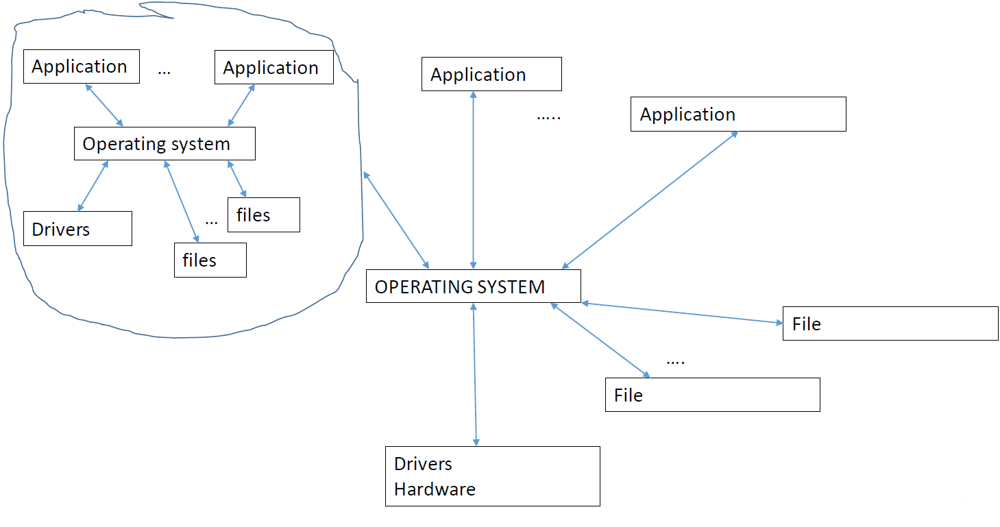
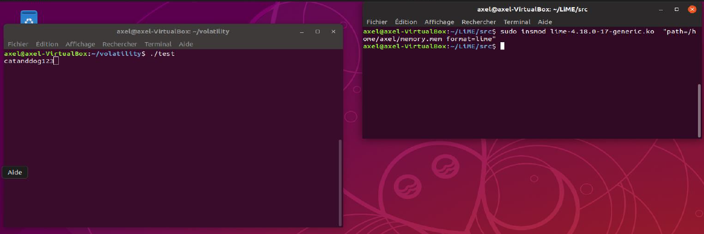
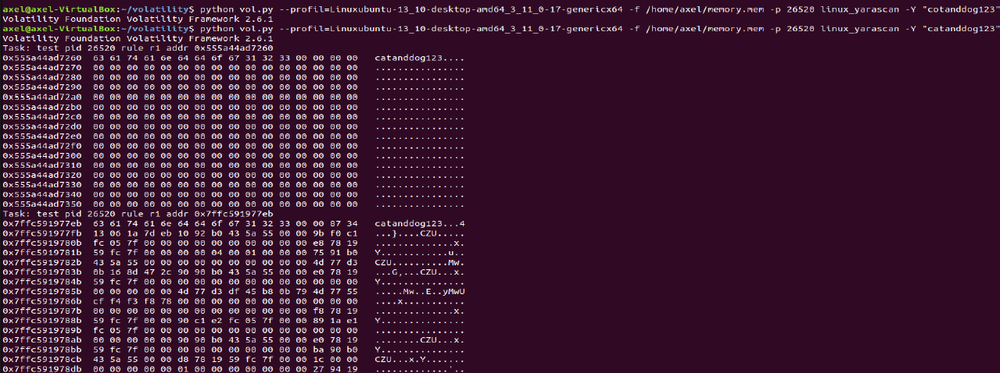

Malware Analysis II¶
Malware Analysis¶
Objective: Classification of an executable binary as clean or malicious (+ malware type/family if possible)
- Always the same principle:
- Characterize the malwares you know with signatures
- Try to detect it in new files under analyses.
- Detection process leads to several types of analysis
- First one: static analysis (read content of the file)
- The signature is a (combination of) string(s) + static properties (features)
Static Analysis¶
Example¶
int malicious_behavior() {
printf("I am evil!!!\n");
}
int main(int argc , char argv) {
malicious_behavior();
}
Static Analysis: Signatures are sequences of strings¶
- Principle: look for relevant strings in the binary ( that’s your signature
- How do the signatures look like?
- composed of characteristic strings extracted from the malware
- other property that can be quickly verified without executing, e.g., hash and size
- How do we extract the signature from a binary?
- major challenge, but when you’ve it you’re happy!
- avoid false positive, false negative
- Before talking about the extraction, let us see what we can do when we have it!
Static Analysis: processing new files¶
- Challenge: How to detect a potential new malware M1?
- Solution:
- Compile all signatures of known malwares in a regular expression (classification)
- and scan the binary of M1 to see if any part matches (detection)
- This is a Pattern matching approach (remember your translator class!)
- It is mostly performed via automata:
- Turn regular expression into automaton
- Walk M1 file in the automaton and check if you reach an accepting state
- A well known tool:
YARA
Malware detection static via YARA¶
Yara IS:
- Elegant way to specify any type of regular expression
- Fast and efficient at detection
- Look for syntactic properties of file
- Does not execute the sample during analysis (i.e. static)
- Plugins to python and other languages
- Protections against REGEX attacks
- Remember : Regular expression are turned into automaton
- If automaton is deterministic then one path
- If automaton is non deterministic which arises for complex regular expressions), then exponential number of paths
- Example:
- regular expression:
[a-z]+@[a-z]+([a-z \.]+.]+\.)+[a-z]+for mail
- regular expression:
Yara IS NOT:
- a virus scanner (but act very similar to existing anti virus)
- a correlation engine
- a bayesian classifier
- Or more generally: an artificial intelligence
Rules can be very complex, but can be written in a very effective manner [3]
rule 2018ISOLLATutorialYaraSimpler {
meta:
description = "Simpler Yara rule for ISOLA 2018"
strings:
$evil_string = "i am evil" wide ascii
condition:
$evil_string
}
Main difficulty: how to write good (effective) YARA rules? I.e. How to identify and extract malicious knowledge from a known database?
Things to avoid:
- Rules that generate many false positives and
- Rules that match only the specific sample and are not much better than a hashvalue.
Solutions:
Comparison with cleanware database (reduce false positive
 Happens when the rule claims it is a malware, but it is
not)
Happens when the rule claims it is a malware, but it is
not)- Take a huge database of cleanware
- Take a malware
- Create a rule with strings that are specific to malware, and not present (or almost not present) in the cleanware
May generate plenty of strings
- Take the x best ones
- Best has to be defined.
yarGen: Keep strings that are likely to not be in goodware.Avoid false positive: Do not claim it is a malware if it notDanger:- Rules may become too specific
- Strings that were present in the sample used as malware may not be part of the malware
- And hence not present in another iteration of the same malware
- Consequence: no detection!
Example https://www.nextron-systems.com/2015/02/16/write-simple-sound-yara-rules/ (ToREAD)
- Good practice (avoid false negative, less specific)Best practice by Florian Roth:
- Very specific strings ($s) s) hard indicators
for a malicious sampleEx: typos: “Micorsoft Corportation” instead of “Microsoft Corporation” and “Monnitor” instead of “Monitor”
Rare strings
likely that they do not appear in
goodware samples, but possibleStrings that look common
(Optional) e.g. yarGen
output strings that do not seem to be specific but didn’t
appear in the goodware string databaseQuestion? How to rank the importance of the strings in the rules?
Automatized in a tool: yarGen¶
Author: Florian Roth
Repository: https://github.com/Neo23x0/yarGen
Purpose: automatic creation of YARA rules
« The main principle is the creation of YARA rules from strings found in malware files while removing all strings that also appear in goodware files. »
{kind=link}
Static Analysis: Syntactic Pattern Matching: Obfuscation¶
https://hal.inria.fr/hal-01964222/file/main.pdf (ToRead)
int malicious_behavior() {
printf("I am");
printf(" evil!!!\n");
}
int main(int argc , char argv) {
malicious_behavior();
}
- Easy to obfuscate, just split the strings in the code... with
strncatandstrcpy - More advanced technique: encoding (byte code, xor + key)
char * keystream = "ISOLA - TUTORIAL -2018 ";
char * obf = "\x00\x73\x2e\x21\x61\x48\x22\x3c\x38\x6e \x73\x68\x4b";
char * xor(char * str) {
int i;
char *cipherstr;
int len = strlen(keystream);
cipherstr = malloc(len * sizeof(char));
for (i = 0; i < len ; i ++) {
cipherstr[i] = str[i] ^ keystream[i];
if(cipherstr[i] == '\n') {
cipherstr[i + 1] = '\0';
break;
}
}
return cipherstr;
}
Problem: Packing Detection¶
- Code gets compressed/encrypted and only decrypted at runtime (possibly one piece at the time)
{kind=link}
- Very effective against any static technique: as hard as breaking encryption
- Difficulties:
- Hard to know if the program is packed
- And by who necessary to unpack
- Solution: To unpack we need to know which technique was used.
- YARA
Import r2;
rule UPX {
strings: $upx = "UPX"
condition:
r2.section("UPX0","") and r2.section("UPX1","") and $upx
}
Machine learning: we use signature based Machine Learning classification
training:
- Extract relevant features from binaries
- Link features to pack/unpack informations + name of packer (if possible, Based on your knowledge)
- Create a ground truth for training ML classifiers (test several algorithms, Generalization step.)
testing:
Use the result to decide if a file is packed
- Efficiency is very important, two questions: Packed or unpacked? Packed by who?
What is a feature ?
| Static features: | Dynamic features: |
|---|---|
|
|
{kind=link}
Packing Detection: Ground Truth¶
ML techniques are as good as the data used to train them. Binaries are chosen for ground truth by combining:
| Hash based Proprietary analyzer | Static signatures | Proprietary tools |
|---|---|---|
|
|
Often done with manual experience and hash based |
//Experimental file packed by us:
//Not known to the proprietary tool
"./tests/binary1": {
"PROPRIETARY_TOOL": Unpacked ,
"YARA_SIGNATURE": TheMida v1.802
"PEID_SIGNATURE": TheMida v1.8
}
//Packed with modified NSIS:
//Not know to static signatures
"./tests/binary2": {
"PROPRIETARY_TOOL": NSIS,
"YARA_SIGNATURE": Unpacked
"PEID_SIGNATURE": Unpacked
}
//Consensus on UPX:
//Added to the ground truth
"./tests/binary3": {
"PROPRIETARY_TOOL": UPX,
"YARA_SIGNATURE": UPX
"PEID_SIGNATURE": UPX
}
{kind=link}
Packing Detection: ML Classifiers¶
We test ML classifiers of various complexity:
- Naive Bayesian Classifier : performs Bayesian hypothesis testing assuming independence of features
- Decision Tree : determines order of feature testing based on greedy entropy minimization
- Random Forest : uses majority voting on multiple Decision Trees to avoid local maxima
- Nearest Neighbors : clusters similar elements according to a distance metric
- ...
Algorithms are evaluated on:
- Effectiveness (by F-score)
- Training time
- Classification time
Packing Detection: Preliminary Results¶
Preliminary results on ML classifiers tested:
{kind=link}
- Database of 160k unpacked and 40k packed PE files
- Used 80% of database for training, 20% for testing
- All classifiers are very effective (even simple ones)
- Decision tree is very cost effective
- Decide classifier to use according to available time
Preliminary results on most relevant features: [4]
{kind=link}
- Specific bytes after entry point
- Presence of non standard sections
- Use of rarely used system calls
| Situation |
Next |
|---|---|
|
|
| [3] | https://yara.readthedocs.io/en/stable/ |
| [4] | * computed as mean decrease impurity on tree based algorithms |
Dynamic Analysis¶
Principle: execute the binary, analyze the memory looking for malicious behavior (in our case, “I am evil!”)
- Works for
strcpy("i am ");strncat(a, " evil ");printf(a) - Does not work for
printf("i am "); printf(" evil ")
{kind=link}
How do we look for the signature in a binary?
- The binary is executed in a virtualized environment.
- The memory is dumped at various times during execution, and
- Search for the signature in the dump.
- Any type of observable behavior
- Example: A sequence of logs (hock the logs)
- Very important, e.g., in case of packing strings are obfuscated
Main difficulty: make sure that the malware does not know it is observed!
Dynamic Analysis: virtualized environment¶
Complexity: high
- Requires setting up and maintaining the emulation of a realistic environment
- Each file analysis requires time to execute the sample plus time to reflash and restart virtualized environment
Tools/software¶
- Sandboxes: Cuckoo, VirusTotal , sandboxie
- Virtual machines: VirtualBox, …
- Native hypervisors
LiMe, fmem,
HBGary, ...Volatility (works with
python, embeds dynamic version of YARA)Computer system : abstract architecture¶
Sandbox¶
- Everything installed stays inside
- Cannot be viewed from external world
- Not saved when application exits
- Hock calls, observe, …
- Time out after some time
{kind=link}
Limits
- Does not analyze malware if it requires command line arguments or packets from C&C server
- Sleep and similar operations can timeout analysis
- Multi file malware (e.g. with DLLs) not analyzed
- May have incorrect environment e.g. OS type
- Analysis result may be hard to understand
Virtual machines¶
{kind=link}
Limits
Not lightweight
Reconstitute a computer within a computer
Can still be detected
- Other solutions: hypervisor (beyond this introduction)
Am I in a VM ?
int hv_bit(){
int cpu_feats=0;
__asm__ volatile (" cpuid "
: "=c" ( cpu_feats ) // output : ecx or rcx -> cpu_feat
: "a" (1)); // input : 1 -> eax or rax
return (cpu_feats >> 31) & 1;
}
Summary¶
- Dynamic analysis forces to execute the malware, this goes beyond static analysis
- But may requires more sophisticated deployments
- Unfortunately: all virtual environments can be detected and evaded
- When a malware is executed, one can get information with memory dump
What is memory forensics ?¶
- Data are stored in either main memory unit or auxiliary memory unit
- RAM (Random Access Memory) is the main memory unit
- It retrieves the programs or data from the auxiliary memory unit
- It temporarily stores the information until the power is turned off.
“Memory forensics is forensic analysis of a computer’s memory dump. Its primary application is investigation of advanced computer attacks which are stealthy enough to avoid leaving data on the computer’s hard drive. Consequently, the memory (RAM) must be analyzed for forensic information. [From Wikipedia]”
There are at least two main reasons to observe the physical memory:
- Contains data related to the real time execution of the system
- Currently mounter file system
- List of active processes, connections, …
- Encrypted data are generally decrypted before being used
- Password is now visible, …
- Code is unpacked before being executed
Memory dump and memory profil¶
- Main difficulty: organisation of memory depends of architecture and kernel symbols
- This information is called the memory profil (can be created from distribution)
- When dumping memory it is of interest to specify the memory profil
- If it is unknown , we obtain a “raw” memory dump
- In this case, tools exists to identify the dump (but they are not perfect)”
- Dumping memory is not hard
- Retrieving informations from dump requires to know the profil
- Identifying profil is thus crucial
- This class does not aim to investiguate the shape of memory
- However, students need to understand that there is no tool able to handle all memory shape and all architecture
Sample of tools to dump memory (Linux)¶
LiME |
dd command |
|---|---|
|
|
Lime: Illustration¶
- The following command:
sudo insmod lime-4.18.0-17-generic.ko "path=/home/axel/memory.mem format=lime"Creates a lime format copy of the RAM and write it into/home/ memory.mem Observe that
lime-4.18.0-17-generic.kois the lime module directly identified by Lime during installation on your distribution! (LiMe version directly link to you kernel distribution version because it need to keep the structure of you memory!)It actually depends on the memory
System.mapin/bootdirectory!To clean up:
rrmod lime
Sample of tools to dump memory (Windows)¶
Dumpit |
OllyDBG and LordPE |
|---|---|
|
|
Sample of tools to dump memory (disassembler)¶
GDBdump binary memory result.bin 0x200000000 0x20000c350
x64dbg
- Scylla Plugin
IDA, RADARE,...
The volatility framework¶
Introduction¶
python.- List of processes
- connections
- Dump process from memory for finer analysis
- Process organization structure
- Command link to process
- Yara (pattern matching inside
- Malfind (detect known)
- ...
Supports¶
Volatility Framework support (taken from their website):
- memory dumps from all major 32 and 64 bit Windows
- Linux memory dumps in raw or LiME format and include 35+ plugins for analyzing 32 and 64 bit Linux kernels from 2.6.11 3.16 and distributions such as Debian, Ubuntu, OpenSuSE , Fedora, CentOS, and Mandrake
- 38 versions of Mac OSX memory dumps from 10.5 to 10.9.4 Mavericks, both 32 and 64 bit. Android phones with ARM processors are also supported
But is is likely that you’ll have to create your own profile (especially for Linux)
Profile creation (linux)¶
.dwarf) and debug
symbols (.map)- it is used to locate critical information inside the memory dump
- Hence to understand the structure of the memory.
It’s imperative that the profile is created on the same machine to be analyzed. Indeed, kernel data structure and debug symbols are specific to distribution and kernel used.
Create the kernel data structure
Use
dwarffor debugging informationaxel@axel-VirtualBox:~/volatility/linux lsinfo kcore Makefile Makefile.enterprise module.c module.dwarf
Get the kernel symbols of the current kernel
tells Volatility how are memory analysis snapshot structured
axel@axel VirtualBox :~ ls /boot/System*/boot/System.map-4.18.0-16-generic /boot/System.map-4.18.0-17-generic
Archive the profile
- in
/volatility/volatility/plugins/linux zip nomprofil.zip /boot/System.map-4.18.0-17-generic/volatility /linux.module.dwarf
- in
Quick usage illustration¶
- Command line:
python vol.py (--profil=profiltodefine) -f file (-p processnumber) command To know the list of available profiles:
python vol.py --info- Example: how to list all process from dump
memory.memwith profil ubuntupython vol.py --profil=ubuntu -f memory.mem linux_pslist Can be combined with Yara and other tools
Relation with virtual machine¶
vboxmanage debugvm "windows10" dumpvmcore --filename test.elf- Extract dump of Ubuntu 2019 and place it into
test.elf. - Vboximage are always ELF files (even if windows runs inside the machine!)
Important: test.elf contains the entire virtualbox environment,
that is not only the RAM of the system running within windows10 , but
also the RAM for the entire machine. One must thus locate the RAM of the
system running within the machine, that is to identify the first LOAD
section , and take a subimage.
Warning
The entire raw memory occupied by the machine will be dumped. As an example, if 10GB of raw memory are allocated to the machine, then they’ll be all dumped. Even if they are not entirely used by the machine.
- Configure your machine properly when you perform an analysis
The limit of static yara analysis¶
Consider that any program which prints “catanddog123” is a malware. The following yara rule should be able to catch such malware:
rule silent_banker : banker {
meta:
description = "This is just an example"
strings:
$a = "catanddog123"
condition:
$a
}
However , the following program (test.c) will not be detected
void main() {
char table1[13];
char table2[3];
strcpy(table1,"catanddog1");
strcpy(table2,"23");
strcat(table1,table2);
printf("%s",table1);
fflush(stdout);
sleep(100000);
}
Nothing happened ; Yara found nothing, this is because « catanddog123 » is not in stored in the file. However , it appears in memory before it is printed.
- Solution: dump the memory and apply yara on it
- Remember : memory contains almost everything you need
Dynamic Yara analysis in action¶
 {kind=link}
{kind=link}
https://eforensicsmag.com/finding-advanced-malware-using-volatility/
It assumes that a dump of the problematic file has been created under
vinfected.vmem.